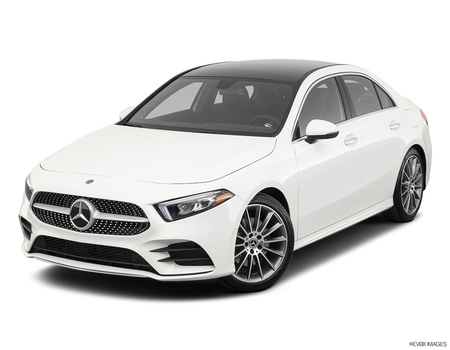

this is my car show room where i view 4 different cars manufactures and each manufacturer have 6 models and thats mean wish mean we have 24 different cars to choose between
Mercedes-AMG G63 iconic G-wagen SUV has roots as a military vehicle, but the high-performance 2022 Mercedes-AMG G63 model serves an entirely different driver than the 1970s original.
A 577-hp twin-turbocharged V-8 engine.....More Info
Mercedes-Benz GLC300 coupe rides high like an SUV but looks
more dramatic thanks to its diving rear roofline. The latter impinges on cargo space and back-seat headroom.....
More Info

Mercedes-Benz A-class is a small car with the heart of an S-class luxury sedan.
The expensive-looking façade helps it look right at home among the rest of the Benz lineup, and its modern.....
More Info
Mercedes-Benz EQB gears up to roll out a comprehensive lineup of electric vehicles,
the boxy EQB—based on the gasoline-powered GLB-class SUV—is among the first offerings under the new EQ subbrand.
Two different all-electric powertrains are offered.... More Info
Mercedes Benz GLE Class Like the mid-size Mercedes SUVs that came before, the 2022 GLE-class
delivers the latest tech, a spacious interior, and more off-road capability than most owners will dare...
. More Info
Mercedes Benz C-Class entry-level sports sedan has been thoroughly redesigned for the
2022 model year but the C-class sticks with its winning formula of luxury.... More Info